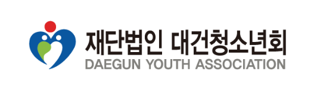
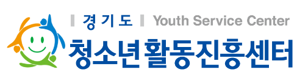

지역사회 안에서의 청소년 교육, 문화, 여가, 복지 등 청소년과 관련된 환경개선 및 사회문화의 긍정적 조성의 필요성과 중요성을 인식하여, 미래의 사회에 주역이 될 청소년들에게 관심과 배려, 용기와 의지, 그리고 희망을 전달하고자 천주교 수원교구에서 설립한 청소년 법인입니다.
- 목적
-
- 21세기 글로벌 시대의 주역인 청소년 육성
- 청소년의 권리신장 및 청소년 문화 조성에 대한 자발적 참여기회 제공
- 개인·법인·단체 등 청소년수련활동에 필요한 프로그램을 개발하여 실시하려는 자
- 유익한 프로그램 운영을 통한 청소년 삶의 질 향상
- 청소년 참여 활성화를 통한 다양한 문화체험 및 직업탐구의 기회 제공
- 청소년 리더들의 네트워크 구축에 따른 교류 증진
- 다양한 봉사와 교류를 통한 더불어 사는 인간상 구현
- 목표
-
- 신시대적 사고와 다양성과 문화적 감성을 지닌 청소년 육성
- 미래 지식사회의 주역이 될 청소년 육성
- 유비쿼터스 환경에 능동적이며 긍정적으로 적응하는 청소년 육성
- 청소년 문화ㆍ여가 증진을 통한 청소년 행복지수 제고
- 방향
-
- 다양한 청소년활동을 통한 청소년의 잠재역량 계발
- 지역사회 청소년보호 네트워크의 중심지로서의 역할
- 청소년의 방과 후 활동지원 강화
- 주 5일 수업 시행에 따른 청소년활동 인프라 구축 및 제공
- 소외 청소년 지원을 통한 청소년복지 구현

1995년 5월 교육부의 교육개혁위원회의 교육개혁방안에 청소년자원봉사활동을 인성교육과제에 일환으로 1997년 10월 경기도청소년자원봉사센터를 설치하였습니다.
2006년 7월 변화하는 사회적 요구와 청소년정책 흐름에 따라 청소년활동 지원과 청소년봉사활동 활성화의 2가지 핵심 기능을 수행하는 경기도청소년활동진흥센터로 개편하여 조직의 기능을 확대하고, 청소년자원봉사, 청소년활동정보제공, 청소년수련활동인증제, 청소년수련활동신고제, 국제청소년성취포상제 등을 수행하는 청소년활동 지원 종합서비스 기관으로 운영하고 있습니다.
- 설치근거
-
- 청소년활동진흥법 제7조 (지방청소년활동진흥센터의설치 등)
- 추진방향
-
- 청소년활동 진흥을 위한 경기도 청소년활동정책 전달 중심기관으로 역할 수행
- ⌜청소년활동진흥법⌟ 제7조 제2항에 규정된 사업을 중심으로 지역의 특성화된 청소년활동 활성화
- 청소년 활동의 지역적 수요를 반영한 탄력적인 사업 운영
- 목적
-
- ⌜청소년활동진흥법⌟ 제7조에 따른 경기도 지역의 청소년활동 진흥
- 목표
-
- 청소년 활동자원 개발 및 지원을 통한 지역중심 청소년활동 역량 개발
- 지역, 중앙과의 연계협력을 통한 전국적 청소년활동 지원 체계 구축
- 주요기능
-
- 지역 청소년활동의 요구에 관한 조사
- 지역 청소년 자원봉사활동의 활성화
- 청소년수련활동 인증제도의 지원
- 인증받은 청소년수련활동의 홍보와 지원
- 청소년활동 프로그램의 개발과 보급
- 청소년활동에 대한 교육과 홍보
- 제9조의2에 따른 숙박형등 청소년수련활동 계획의 신고에 대한 지원
- 제9조의4에 따른 정보공개에 대한 지원
- 청소년 참여 관련 사업의 운영 및 지원
- 그 밖에 청소년활동을 위하여 필요한 사업